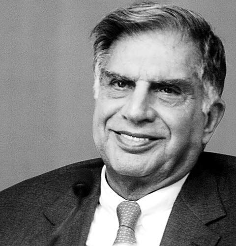

Sir Ratan Naval Tata

- An Indian businessman, investor, philanthropist and former chairman of Tata Sons
Here's a timeline of Mr. Tata's life:
28th Dec 1937
He was born on December 28, 1937 in Surat, India, to Naval Tata and Sonoo. Naval Tata was the adopted son of the Jamsetji Tata’s younger son Ratanji Tata. Jamsetji Tata was the founder of the Tata Group of Companies. Ratan Tata has a brother, Jimmy, and a step-brother, Noel Tata.
1962
He received his early education from the Campion School, Mumbai and finished his schooling from the Cathedral and John Connon School, Mumbai. In 1962, he obtained his B.S. in architecture with structural engineering from Cornell University, U.S.A.
1962
He started his career with the Tata Steel division where he shoveled stones and worked with the furnaces along with the blue-collar employees. It was a difficult job and helped him gain a better understanding and respect for his family business.
1971
He was appointed as the Director-in-Charge of the National Radio & Electronics Company Limited (NELCO) in order to help its struggling finances. He worked towards building a better consumer electronics division but the economic recession and union strikes prevented him from achieving success.
1991
In 1991, J.R.D. Tata appointed him as the new Chairman of the Tata Group of Companies. This decision came under scrutiny following objections from other executives of the company and questions were raised regarding his ability to run the corporation.
2000
In 2000, he was conferred the Padma Bhushan, the third highest civilian honor awarded by the Government of India.
2004
He received the ‘Medal of the Oriental Republic of Uruguay’ from the Government of Uruguay.
2005
He was conferred the ‘International Distinguished Achievement Award’ by the B'nai B'rith International.
2007
He was conferred the Honorary Fellowship of The London School of Economics and Political Science.
2008
In 2008, he was awarded the ‘Padma Vibhusan’, the second highest civilian honor awarded by the Government of India.
2009
In 2009, he was awarded the title of Honorary Knight Commander of the Order of the British Empire, United Kingdom.
2012
On his 75th birthday, i.e, on 28 December 2012 he resigned from the post of Chairman of Tata Group. Even after retirement, he is still an active businessman and invests in upcoming promising business ventures.
"I don't believe in taking right decisions. I take decisions and then make them right."
--Ratan Tata